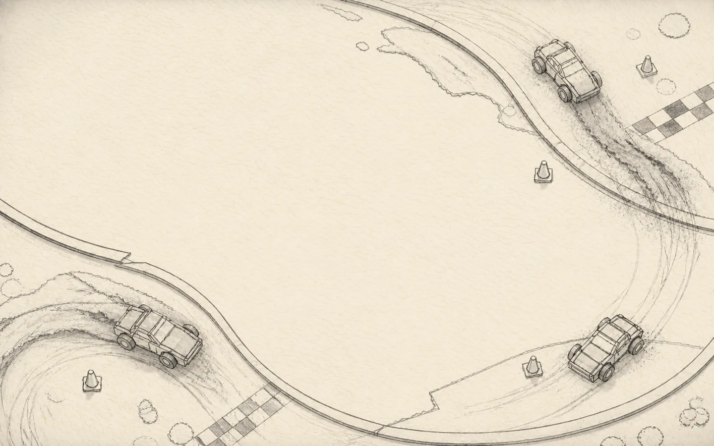

Paper Circuit
AIND DRAWN / ARCADE TEST
Paper Circuit / Race control
Menu: + · Yellow = focus · ✓ = selected
Position
1/4
Lap
1/5
Route mapped
0%
Largest gap 0.0 / 0 m
Valid road
Covered this lap
Explore
Random character
Idle
Vehicle interaction
Interact
Running order
Flow chain
x1.0 +0000
Ready · 0 links · 0 near · 00000 pts
0
km/h
Sideways!
Keep it loose
3
drive · drift · pause
Race ready. Accelerate when the countdown clears.